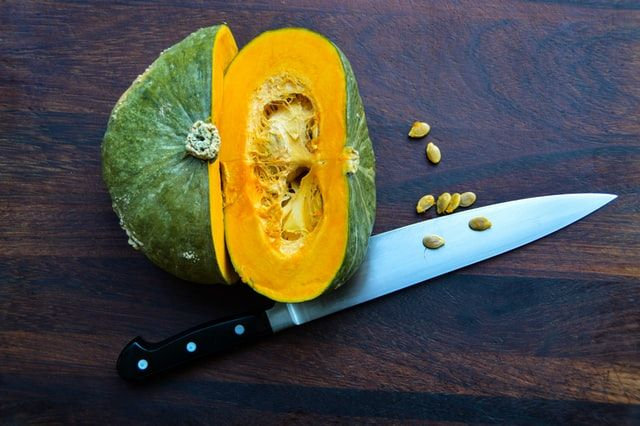

Purée de courge poivrée
Préparation: 10 minutes
Cuisson: 1 heure
Total: 1 heure 10 minutes
Ingrédients
-
1 courge poivrée

-
2 c. à soupe de sirop d'érable
-
3 c. à soupe de beurre
-
1 pincée de gingembre moulu
-
sel et poivre
Instructions
Couper 1 courge poivrée en deux. Retirer les graines. Pour cuisiner les graines, voir la 3e étape.
Saler et poivrer les moitiés. Déposer sur une plaque pour le four la face coupée vers le bas. Cuire au four à 180 °C (350 °F) pendant environ une heure. La chaire devrait être tendre.
Si vous voulez manger les graines, les rincer à l'aide d'une passoire et séparer les graines de la chaire. Déposer à côté des demis courges. Après 15 minutes, retourner les graines. Après 30 minutes, elles sont prêtes. Ajouter un soupçon d'huile d'olive et du sel et servir!
À l'aide d'une cuillère, retirer la chaire de la peau de la courge lorsqu'elle a refroidie un peu pour ne pas se brûler. Réduire en purée avec le restant des ingrédients.
- 2 c. à soupe de sirop d'érable
- 3 c. à soupe de beurre
- 1 pincée de gingembre moulu